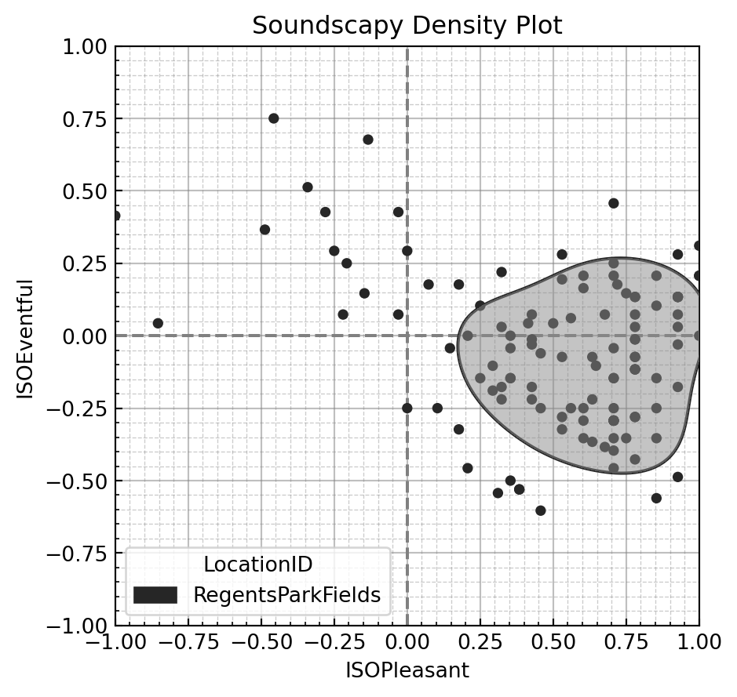

Introduction
Methods for collecting data on how people experience acoustic environments have been at the forefront of the debate in soundscape studies for the past 20 years. While the soundscape research field as we understand it today dates back to the late 1960s with the pioneering work of authors like M. Southworth (Southworth 1969), R.M. Schafer (Schafer 1977), and H. Westerkamp (Westerkamp 2002), the theme of data collection methods for soundscape assessment emerged more prominently only recently (Kang et al. 2016). There is a general consensus in the research community that standardised tools to gather and report individual responses on the perception of urban acoustic environments are indeed desirable, to provide comparable datasets and soundscape characterisations across different locations, times, and samples of people, as well as allowing for replicability studies, and offering inputs for modelling algorithms in soundscape prediction and design tasks. These were among the main drivers for the establishment of a Working Group at the International Organization for Standardization (ISO) back in 2008, which was named “Perceptual assessment of soundscape quality” (ISO/TC 43/SC 1/WG 54) that has so far published three documents within the ISO 12913 series on soundscape. Part 1 (ISO 12913-1:2014) is a full standard and provides a general framework and definitions of soundscape concepts (ISO 2014), while Part 2 (ISO/TS 12913-2:2018) and Part 3 (ISO/TS 12913-3:2019) are technical specifications and offer guidance on how data should be collected and analysed, accordingly (ISO 2018, 2019) (Part 4, on soundscape design interventions, is currently under development by the working group, also registered as a technical specifications document). Specifically, Part 3 presents the proposed methods for analysing and representing the data collected by the soundscape surveys. Since the development of these standards, the focus has shifted from understanding individual perception to characterising the collective perception of increasingly large groups.
In a recent editorial paper on Soundscape Assessment, Axelsson and colleagues observe that it is important to critically discuss current theories and models in soundscape studies and to examine their effectiveness, while also looking at how to integrate different methods and perspectives for the discipline to make further advancements (Axelsson, Guastavino, and Payne 2019). This work was mainly aimed at addressing the issue of meaningful comparability and representation of soundscape assessments. Part 2 of the ISO 12913 standard itself does not provide ultimate answers: the technical specifications recommend multiple methods, as consensus around a single protocol could not be reached. This diversity of methodological approaches should be interpreted as a fact that soundscape theory is still under development and, for this reason, the standardisation work should probably take a step back and focus on developing a reference method for comparability among soundscape studies, rather than a single protocol for soundscape data collection. Some attempts have indeed already been made in literature for the different methods proposed in the ISO/TS 12913-2:2018 Jo, Seo, and Jeon (2020). Neither the standard nor the general soundscape literature has settled on effective methods of analysing and representing the data that results from these protocols. Data visualisations are particularly important for understanding and communicating information as multifaceted as soundscape perception (Tufte 2001). Although it is unlikely that any single method will be sufficient, attempts should be made to both facilitate future advancements in this realm and to develop a first step approach that captures the inherent uncertainty in perception studies, since including uncertainty is considered one of the core principles of good data visualisation (Midway 2020).
This study thus aims to review the consequences of these methods for larger datasets and provide concrete examples for how soundscapes should be represented. In particular, we aim to strengthen the practices for characterising the soundscape of a location, as a collective perception by the users of the location. We also demonstrate how the progress of these tools from their initial scope (measuring and discussing the individual perception of a soundwalk participant) have not kept up with recent advances and requirements for larger-scale soundscape datasets. We question whether there are some issues related to the data collection instruments and data analysis methods as recommended and examine the results of the model framework and mathematical transformations laid out in the ISO technical specifications to guide the interpretation of the soundscape circumplex.
To examine these tools and the questions raised, we apply them to an existing large scale, real-world dataset of soundscape assessments collected according to the ISO methods. Finally, we propose a more holistic and advanced method of representing soundscapes as a probabilistic distribution of perceptions within the circumplex and provide a toolbox for others to use.
The current ISO 12917 framework
Although different methods are proposed for data collection in ISO12913 Part 2 (ISO 2018), in the context of this study we focus on the questionnaire-based soundscape assessment (Method A), because it is underpinned by a theoretical relationship among the items of the questionnaire that compose it. The core of this questionnaire is the 8 perceptual attributes (PA) originally derived in Axelsson, Nilsson, and Berglund (2010): pleasant, vibrant (or exciting), eventful, chaotic, annoying, monotonous, uneventful, and calm. In the questionnaire procedure, these PAs are assessed independently of each other, however they are conceptually considered to form a two-dimensional circumplex with {Pleasantness} and Eventfulness* on the x- and y-axis, respectively, where all regions of the space are equally likely to accommodate a given soundscape assessment (Aletta, Kang, and Axelsson 2016). In Axelsson, Nilsson, and Berglund (2010), a third primary dimension, Familiarity was also found, however this only accounted for 8% of the variance and is typically disregarded as part of the standard circumplex. As will be made clear throughout, the circumplex model has several aspects which make it useful for representing the soundscape perception of a space as a whole.
Coordinate transformation into the two primary dimensions
To facilitate the analysis of the PA responses, the Likert scale responses are coded from 1 (Strongly disagree) to 5 (Strongly agree) as ordinal variables. In order to reduce the 8 PA values into a pair of coordinates which can be plotted on the Pleasant-Eventful axes, Part 3 of ISO 12913 (ISO 2019) provides a trigonometric transformation, based on the 45\degree-relationship between the diagonal axes and the pleasant and eventful axes. This transformation projects the coded values from the individual PAs down onto the primary Pleasantness and Eventfulness dimensions then adds them together to form a single coordinate pair. In theory, this coordinate pair then encapsulates information from all 8 PA dimensions onto a more easily understandable and analysable two dimensions. The ISO coordinates are thus calculated by:
\begin{split} ISO Pleasant = [(pleasant - annoying) + \cos 45\degree * (calm - chaotic) \\ + \cos 45\degree * (vibrant - monotonous)] * 1/(4+\sqrt{32)} \end{split} \tag{1}
\begin{split} ISO Eventful = [(eventful - uneventful) + \cos 45\degree * (chaotic - calm) \\ + \cos 45\degree * (vibrant - monotonous)] * 1/(4+\sqrt{32)} \end{split} \tag{2}
where the PAs are arranged around the circumplex as shown in Figure 1. The \cos 45\degree term operates to project the diagonal terms down onto the x and y axes, and the 1 / (4 + \sqrt{32}) scales the resulting coordinates to the range (-1, 1). The result of this transformation is demonstrated in Figure 1. This treatment of the 8 PAs makes several assumptions and inferences about the relationships between the dimensions. As stated in the standard (ISO 2019, 5):
According to the two-dimensional model, vibrant soundscapes are both pleasant and eventful, chaotic soundscapes are both eventful and unpleasant, monotonous soundscapes are both unpleasant and uneventful, and finally calm soundscapes are both uneventful and pleasant.

Summarising the soundscape assessment of a location
While the assessment methods available are able to record the soundscape perception of a single individual, and that person’s perception is valid for themselves, it is not appropriate to then state that it is representative of the collective perception of that soundscape. In order to characterise the soundscape of a particular space or time, perceptual responses from multiple people must be collected and subsequently summarised or aggregated to describe the general soundscape of the location. The ISO guidelines stipulate a minimum of 20 participants for a soundwalk, with these broken up into sessions of no more than 5 participants at a time. Part 3 then provides the recommended methods for analysing this data.
Annex A.2 of ISO 12913 Part 3 provides the statistical measures to be used on the raw PA responses. The recommended measure of central tendency is the median, while the recommended measure of dispersion is the range. These are chosen as the data is ordinal by nature, however as will be demonstrated later, they have significant limitations. Although it is unclear, the implied intention is then that the median value of each PA is fed into Equation 1 and Equation 2 presented above to calculate the ISOPleasant and ISOEventful values, which can then be plotted in a two-dimensional scatter plot. Thus the standard suggests that 1) the projection method equations are not applied to individual responses and 2) only the median assessment of a location should be plotted.
Limitations of the ISO
How these methods should be applied to represent the soundscape of a location has not been adequately discussed in previous literature, nor sufficiently in Part 3 of ISO 1293 itself. Indeed, in Section A.3, the technical specifications document state that (ISO 2019, 5):
Results can be reported in a two-dimensional scatter plot with coordinates for the two dimensions ‘pleasantness’ and ‘eventfulness’. The coordinates for ‘pleasantness’ are plotted on the X-axis, and the coordinates for ‘eventfulness’ on the Y-axis. Every data point in the scatter plot represents one investigated site.
However, it is not made clear whether this single point on the circumplex can be considered to be a realistic representation of the average perception of the acoustic environment. Effectively, there is no representation of dispersion in the soundscape assessment, nor a recommended use of the range that was calculated as part of the analysis recommend in Section A.2 of Part 3 of the ISO 12913. Absent a suggestion from the ISO 12913 for how the range should be used, we therefore apply this analysis to an existing real-world soundscape dataset to determine whether it provides a useful measure of dispersion. Here we use the data contained in the International Soundscape Database (ISD) (Mitchell, Oberman, Aletta, Erfanian, et al. 2021), which includes 1,300+ individual responses collected across 13 locations in London and Venice, according to the SSID Protocol, which is based on the ISO methods explored in this paper (Mitchell et al. 2020).
For any large enough sample for a site, the range will always be from 1 to 5, the maximum and minimum available Likert-scale values. We would expect that collecting more data would result in more information or better precision, however the range will always increase as the sample size increases. As an example, within the ISD data, of the 8 PAs collected at 13 locations (for a total of 104 scales), 88% have a range from 1 to 5 and with larger sample sizes at each location, this percentage would only have increased. Using range to analyse the dispersion provides very limited information for comparing the soundscape assessments of different locations, or of a location under different conditions.
Although the range does not appear to be a useful measure of dispersion, the median does provide a useful measure and appropriately functions to describe the central tendency of the soundscape assessment of the sample. However, by stipulating that the median of each PA should be taken prior to applying the circumplex projection, the ISO procedure only allows for plotting a single scatter point in the circumplex for each location and does not allow for plotting individual responses on the circumplex. This limits the possibilities for visualising the general trends in individual perception across the soundscape. Finally, no example or recommendation for how the circumplex scatter plot should be presented is given in the standard.
The instruments described in the ISO 12913 Part 2 (ISO 2018) were originally designed primarily for the context of individual or small group assessments. In these scenarios, the focus is on assessing the particular soundscape perception of the person in question. Recent advances in the soundscape approach since the development of the standards have shifted some focus from individual soundscapes to characterising the overall soundscape of public spaces (Mitchell et al. 2020) and to making comparisons between different groups of people (Jeon et al. 2018). In this context, a consideration of the natural variation in people’s perception and the variation over time of a soundscape must be a core feature of how the soundscape is discussed. Reducing a public space which may have between tens and tens of thousands of people moving through it in a single day down to the mean (or median, or any other single metric) soundscape assessment often dismisses the reality of the space. Likewise, this overall soundscape of a public space cannot be determined through a ten person soundwalk, as there is no guarantee that the sample of people engaged in the soundwalk is representative of the users of the space (in fact it is likely they would not be).
The Way Forward: Pleasant-Eventful Coordinates and Probabilistic Soundscape Representation
Given the identified issues with the recommended methods for statistical analysis and their shortcomings in representing the variation in perception of the soundscape in a space, how then should we discuss or present the results of these soundscape assessments? Ideally, the method will: 1) take advantage of the circumplex coordinates and their ability to be displayed on a scatter plot and treated as continuous variables, 2) scale from a dataset of twenty responses to thousands of responses, 3) facilitate the comparison of the soundscapes of different locations, conditions, and groups, and 4) encapsulate the nuances and diversity of soundscape perception by representing the distribution of responses.
We therefore present a visualisation in Figure 2 of the soundscape assessments of several urban spaces included in the ISD (Mitchell, Oberman, Aletta, Erfanian, et al. 2021) which reflects these goals. The specific locations selected from the ISD are chosen for demonstration only and these methods can be applied to any location. Rather than attempting to represent a single individual’s soundscape or of describing a location’s soundscape as a single average assessment (as in Mitchell, Oberman, Aletta, Kachlicka, et al. (2021)), this representation shows the whole range of perception of the users of the space. First, rather than calculating the median response to each PA in the location, then calculating the circumplex coordinates, the coordinates for each individual response are calculated. This results in a vector of ISOPleasant, ISOEventful values which are continuous variables from -1 to +1 and can be analysed statistically by calculating summary statistics (mean, standard deviation, quantiles, etc.) and through the use of regression modelling, which can often be simpler and more familiar than the recommended methods of analysing ordinal data. This also enables each individual’s response to be placed within the pleasant-eventful space. All of the responses for a location can then be plotted, giving an overall scatter plot for a location, as demonstrated in Figure 2 (a).
Code
import soundscapy as sspy
import matplotlib.pyplot as plt
import pandas as pd
ssid = sspy.isd.load()
ssid = sspy.isd.remove_lockdown(ssid)
ssid, excl = sspy.isd.validate(ssid, allow_paq_na = False, verbose=0)
sspy.plotting.jointplot(
sspy.isd.select_location_ids(ssid, "PancrasLock"),
# title = "(a) Example distribution of the soundscape\nperception of an urban park",
diagonal_lines = True,
hue = "LocationID",
legend = True,
alpha = 0.75,
)
plt.show()
sspy.plotting.density(
sspy.isd.select_location_ids(ssid, "RegentsParkFields"),
# title="(b) Median perception contour and\nscatter plot of individual assessments",
hue="LocationID",
legend=True,
density_type="simple",
palette="dark:gray",
);
plt.show()
sspy.plotting.density(
sspy.isd.select_location_ids(ssid, ['CamdenTown', 'RussellSq', 'PancrasLock']),
# title="(c) Comparison of the soundscapes\nof three urban spaces",
hue="LocationID",
alpha=0.5,
palette="husl",
legend=True,
density_type="simple",
);
plt.show()
ssid["dBLevel"] = pd.cut(
ssid["LAeq_L(A)(dB(SPL))"],
bins=(0, 63, 150),
labels=("Under 63dB", "Over 63dB"),
precision=1,
)
sspy.plotting.jointplot(
ssid,
# title="(d) Soundscape perception as a\nfunction of sound level",
diagonal_lines=False,
alpha=0.5,
palette="colorblind",
hue="dBLevel",
density_type="simple",
incl_scatter=False,
legend=True, #
# ax = axes.flatten()[3]
);
plt.show()
# plt.tight_layout()



Once these individual responses are plotted, we then overlay a heatmap of the bivariate distribution (with isodensity curves for each decile) and marginal distribution plots1. In this way, three primary characteristics of the soundscape perception can be seen:
The distribution across both pleasantness and eventfulness, including the central tendency, the dispersion, and any skewness in the response;
The general shape of the soundscape within the space - in this case, Russell Sq is almost entirely in the pleasant half but is split relatively evenly across the eventfulness space, meaning while it is perceived as generally pleasant, it is not strongly calm or vibrant;
The degree of agreement about the soundscape perception among the sample - there appears to be a relatively high agreement about the character of Russell Sq, as demonstrated by the compactness of the distribution, but this is not the case for every location.
Figure 2 (a) includes several in-depth visualisations of the distribution of soundscape assessments, however the detail included can make further analysis difficult. In particular, a decile heatmap is so visually busy that, in our experience, it is not possible to plot more than one soundscape distribution at a time without the figure becoming overly busy. It also can make it difficult to truly grasp point 2, the general shape of the soundscape. To facilitate this, the soundscape can be represented by its 50th percentile contour, as demonstrated in Figure 2 (b) where the shaded portion contains 50% of the responses. This simplified view of the distribution presents several advantages, as is demonstrated in Figure 2 (c) and Figure 2 (d) and takes inspiration from the recommendation in the ISO standard to use the median as a summary statistic. In our testing, the 50th percentile contour has proved useful, clear, and compact, however this should not be taken as the definitive correct percentile cutoff. Further work will need to be done to validate the precise presentation.
When visualised this way, it is possible to identify outliers and responses which are the result of anomalous sound events. For instance if during a survey session at a calm park, a fleet of helicopters flies overhead, driving the participants to respond that the soundscape is highly chaotic, we would see a group of scatter points in the chaotic quadrant which appear obviously outside the general pattern of responses. Often, these responses would be entirely discarded as outliers or the surveys and soundwalks would be halted entirely – ignoring what is in fact a significant impact on that location, its soundscape, and how useful it may be for the community. Alternatively, they would be naively included within the statistical analysis, significantly impacting the central tendency and dispersion metrics (i.e. median and range) without consideration for the context. This is the situation shown in Figure 2 (b) where it is obvious that there is strong agreement that Regents Park Fields is highly pleasant and calm, however we can see numerous responses which assessed it as highly chaotic. These responses were taken when a series of military helicopter flyovers drastically changed the sound environment of the space for several minutes.
Figure 2 (c) demonstrates how this simplified 50th percentile contour representation makes it possible to compare the soundscape of several locations in a sophisticated way. The soundscape assessments of three urban spaces, Camden Town, Pancras Lock, and Russell Square, are shown overlaid with each other. We can see that Camden Town, a busy and crowded street corner with high levels of traffic noise and amplified music, is generally perceived as chaotic, but the median contour shape which characterises it also crosses over into the vibrant quadrant. We can also see that, for a part of the sample, Russell Square and Pancras Lock are both perceived as similarly pleasant, however some portion of the responses perceived Pancras Lock as being somewhat chaotic and annoying. This kind of visualisation can highlight these similarities between the soundscapes in the locations and identify how they differ. From here, further investigation could lead us to answer what factors led to those people perceiving the location as unpleasant, and what similarities the soundscape of Pancras Lock has with Russell Square that could perhaps be enhanced to increase the proportion of people perceiving it as more pleasant.
In addition to solely analysing the distributions of the perceptual responses themselves, this method can also be combined with other acoustic, environmental, and contextual data. The final example, in Figure 2 (d) demonstrates how this method can better demonstrate the complex relationships between acoustic features of the sound environment and the soundscape perception. The data in the ISD includes ~30-s-long binaural audio recordings taken while each participant was responding to the soundscape survey, providing an indication of the exact sound environment they were exposed to. For Figure 2 (d) the entire dataset of 1,338 responses at all 13 locations has been split according to the analysis of these recordings giving a set of less than 65 dB L_{Aeq} and a set of more than 65 dB. The bivariate distributions of these two conditions are then plotted.
By presenting soundscape perception as a bivariate distributional shape on the circumplex, practitioners are obligated to address two key aspects of perception that are too often ignored: the distribution of potential responses and the eventful dimension. The array of potential responses to an environment is a crucial factor in assessing the successful design of a space and represents the reality of perception. There is no single perceptual outcome of an environment; it will always include some randomness inherent in human perception and this should be reflected in how we present soundscape assessments. Similarly, the eventful dimension is crucial to understanding how an environment is perceived and can have important impacts on the health and well-being of the users. Recent evidence also suggests that there is a more direct relationship between acoustic characteristics and the perception of eventfulness, while pleasantness is more dependent on context (Mitchell, Oberman, Aletta, Kachlicka, et al. 2021). Studies that explore the correlations between acoustic features and annoyance (or pleasantness) without considering eventfulness are perhaps missing the most direct effect of the acoustic features.
Making Use of the Soundscape Circumplex
There are various potential methods for integrating the probabilistic soundscape approach into a design and intervention setting. Representing the soundscape as a shape within the circumplex provides flexibility in setting design goals for a space. Not all spaces can or should have the same soundscape and soundscapes should be treated as dynamic, not static; identifying and creating an appropriate soundscape for the particular use case of a space is crucial to guiding its design. Proper forward-looking design of a soundscape would involve defining the desired shape and distribution of perceptions in the space. This can be achieved by drawing the desired shape in the circumplex and testing interventions which will bring the existing soundscape closer to the desired perception. A soundscape may need to be perceived as vibrant during the day and calm for some portion of the evening, meaning the desired shape should primarily sit within the vibrant quadrant but have some overlap into calm. This also enables designers to recognise the limitations of their environment and acknowledge that it is not always possible to transform a highly chaotic soundscape into a calm one. In these cases, instead the focus should be placed on shifting the distribution to some degree in a positive direction. The most sophisticated method of setting design goals is therefore to identify the desired shape which represents the variety of desired outcomes, and focus on designs and interventions which are most successful in matching the predicted outcome with that goal.
Although the visualisations shown in Figure 2 are a powerful tool for viewing, analysing, and discussing the multi-dimensional aspects of soundscape perception, there are certainly cases where simpler metrics are needed to aid discussion and to set design goals. For this, the underlying process of calculating the ISOPleasant and ISOEventful coordinates for each individual response is still the first step in analysing the quantitative soundscape data. These sets of coordinates can then be analysed and summarised in various ways. One approach which takes inspiration from noise annoyance (ISO/TS 15666:2021 2021), is to discuss the “percent of people likely to perceive” a soundscape as pleasant, vibrant, etc. when it is necessary to use numerical descriptions. In this way, a numerical design goal could also be set as e.g. ‘the soundscape should be likely to be perceived as pleasant by at least 75% of users’ or the result of an intervention presented as e.g. ‘the likelihood of the soundscape being perceived as calm increased from 30% to 55%’. These numbers can be drawn from either actual surveys or from the results of predictive models.
Although acknowledging the distribution of responses is crucial, it is sometimes necessary to summarise locations down to a single point to compare many different locations and to easily investigate how the soundscape assessment has generally changed over time. For this purpose, the mean of the ISOPleasant and ISOEventful values across all respondents is calculated to result in a single coordinate point per location. This clearly mirrors the original intent of the coordinate transformation presented in the ISO, but by applying the transformation first to each individual assessment then calculating the mean value, it maintains a direct link to the distributions shown in Figure 2. An example plot using the mean response of each location to compare many locations and to demonstrate change in soundscape perception can be found in Figure 5 of Mitchell, Oberman, Aletta, Kachlicka, et al. (2021). The key to all of these analysis methods, whether they be the distributional plots shown in Figure 2, the numerical summaries, or the use of other standard statistical analyses is treating the soundscape of the space or group as a collective perception as expressed by a vector of individual circumplex coordinates.
Finally, the primary concern addressed by this method is the analysis of larger soundscape datasets, compared to what is suggested in the standard. This is necessary in order to statistically describe the groups or sub-groups being investigated, and is typically taken to need a minimum of ~30 responses per group (although the full dataset, made up of many groups and locations may have many more responses in total, as in the ISD) (e.g. Hong and Jeon 2015; Puyana Romero et al. 2016). It is unlikely that the bivariate distributions plots shown are appropriate for small datasets. However, the process of calculating the ISO coordinates for each individual response and treating this as a set of continuous values to subject to other statistical analysis holds for all sample sizes. Pleasant-eventful scatterplots are still useful for comparing differences in individual responses and appropriate methods of summarising small sample data should be explored (such as the univariate scatterplots described in Weissgerber et al. (2015)).
Limitations of the circumplex and quantitative analysis
The method presented here is a solution for representing the soundscape of a space, which requires considering the perception of many people, but it is important to note that this is only one (very important) goal of the soundscape approach. Psychological and sociological investigations of people’s relationship to their sound environment and the interactions between social contexts and individual perception are a crucial aspect of the field for which this approach would likely not be sufficient (Bild et al. 2018). Open-response questions, structured interviews, and mixed-methods studies can provide additional insight into how people experience their environment and should be considered alongside or preceding this focus on how a space is likely to be perceived on a larger scale.
These other approaches are not in opposition to the methods proposed here, but instead further expand our view. The circumplex is a limited view of soundscape perception (this is made obvious by the fact that it excludes the third component, familiarity, identified in Axelsson, Nilsson, and Berglund (2010)) but it is an exceptionally rich tool for dealing with the two primary aspects of soundscape perception which can readily expand the much more limited view provided by existing noise and annoyance assessment tools. Aspects of the psychological and sociological emphasis can also be integrated into a circumplex-focused approach, as demonstrated in Erfanian et al. (2021), where personal factors such as age, gender, and psychological well-being were analysed in terms of how they mediated the ISOPleasant and ISOEventful outcomes.
There has been some discussion regarding the interdependence of the PAs and the strict validity of the 90and 45 relationships between the attributes (Lionello et al. 2021). Further work has indicated that the scaling between the attributes may vary, but the underlying relationships hold. It is for this reason that we have taken the coordinate projection as the starting point of this critique. It should also be noted that the particular PA descriptors used in ISO 12913 are intended for outdoor environments and should not be directly applied to indoor spaces. However, a proposed set of descriptors for some indoor environments has been derived which further confirms the validity of the circumplex relationships (Torresin et al. 2020). The methods proposed here should be directly applicable to indoor spaces by using the comfort/content descriptors as well as to any other translations of soundscape descriptors into other languages (Aletta et al. 2020) as long as the dimensional relationships of the circumplex are maintained.
Conclusions
Soundscape studies have been steadily growing as a research field over the past three decades. Their relevance for the planning and design of urban spaces is now generally acknowledged by both the academic and practitioners’ communities. Yet, for their contribution in shaping better environments to be meaningful, it is necessary to agree on common methodological approaches and techniques to analyse and present standardised soundscape data. Therefore, the general goal of this work is to consider some of the questions that may still have been left unanswered by the ISO 12913 series when it comes to optimal ways to analyse and represent soundscape data coming from the ISO standardised protocols. As a result, we propose a method for presenting the results of standardised assessments as a distribution of soundscape perception within the circumplex space. This method provides an opportunity to conduct a nuanced discussion of soundscape perception which considers the variety of individual responses. The tools for generating these circumplex visualisations are made openly available as well. This shift is part of a move towards a more holistic approach to urban noise and to integrating the soundscape approach into urban design and regulations.
Data and Code Availability
The data used in this study are openly available as v0.2.3 of the International Soundscape Database (ISD) at https://zenodo.org/record/5578572. A library of python functions for producing the type of plots presented (using the seaborn plotting library (Waskom 2021)) and an interactive Jupyter notebook which provides a tutorial for using this code, working with the ISD data, and recreating the figures of this paper has been made available as part of the ISD.
Acknowledgements
This project has received funding from the European Research Council (ERC) under the European Union’s Horizon 2020 research and innovation program (grant agreement No. 740696, project title: Soundscape Indices - SSID). We would like to acknowledge Matteo Lionello for the helpful discussions, and (in alphabetical order) Mercede Erfanian, Magdalena Kachlicka, and Tin Oberman for the helpful discussions and the data collection support.
References
Footnotes
The specifics of the bivariate kernel density estimation (Silverman 2018) are beyond the scope of this discussion and the most appropriate hyperparameters (e.g. estimation methods, smoothing factors) for this visualisation may need to be further explored. These parameters will likely depend on the specific dataset used.↩︎
Reuse
Citation
@article{mitchell2022,
author = {Mitchell, Andrew and Aletta, Francesco and Kang, Jian},
title = {How to Analyse and Represent Quantitative Soundscape Data},
journal = {JASA Express Letters},
volume = {2},
number = {3},
pages = {037201},
date = {2022-03-16},
url = {https://pubs.aip.org/asa/jel/article/2/3/037201/2845750},
doi = {10.1121/10.0009794},
langid = {en},
abstract = {This study first examines the methods presented in ISO
12913 for analysing and representing soundscape data by applying
them to a large existing database of soundscape assessments. The key
issue identified is the inability of the standard methods to
summarise the soundscape of locations and groups. The presented
solution inherently considers the variety of responses within a
group and provides an open-source visualisation tool to facilitate a
nuanced approach to soundscape assessment and design. Several
demonstrations of the soundscape distribution of urban spaces are
presented, along with proposals for how this approach can be used
and developed.}
}